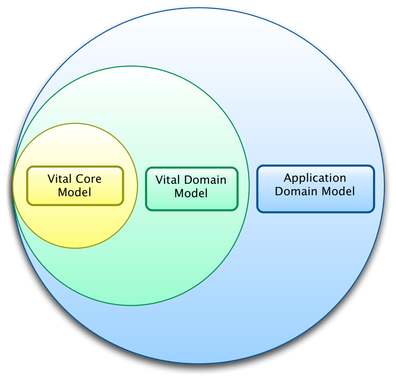

Data Model
Vital AI provides a low-level Core data model which allows different
data processing components to have a common data framework.

This Core data model is extended to include objects for common use cases,
such as "User", "Document", "Event", and others.
This Vital Domain Model is extended to include objects that are required
for an application. This becomes the Application Domain Model.
For example, if an application will recommend movies to users, then the
application may extend the domain model to include objects for "Film",
"Actor", and "Genre".